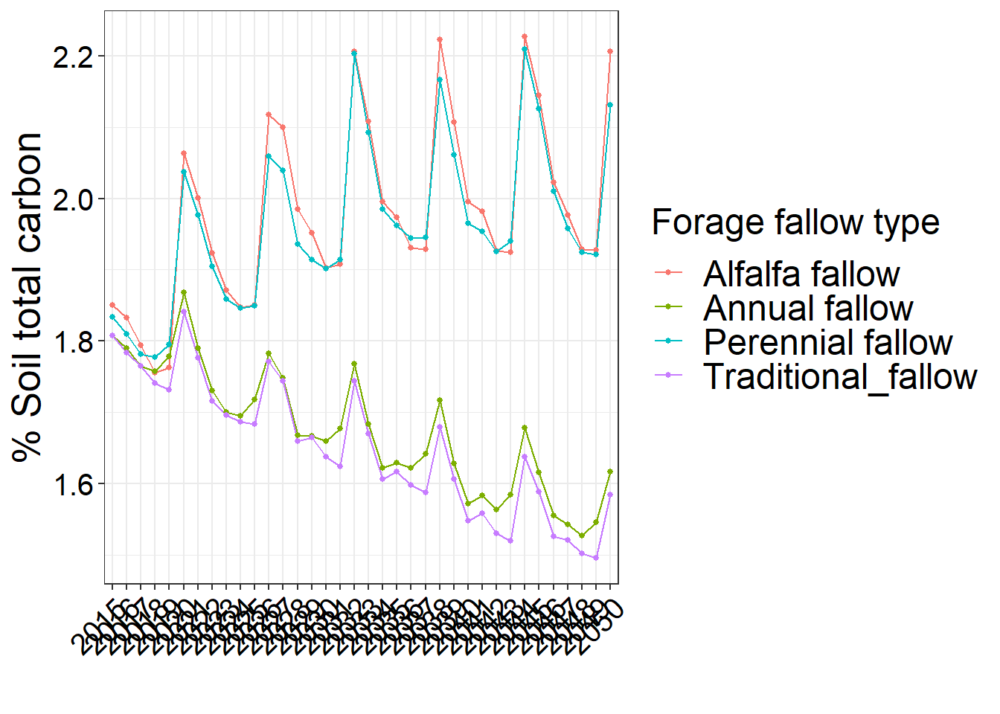

Step 4 Summary (Description and analysis)
4.1 Context of the following analysis.
#First Chapter of thesis dissertation: "Exploring the sustainability of forage-based fallows in Peruvian Andean agriculture systems"
# In this study, the percentage of Soil total carbon was considered as one indicator to determine sustainability
# I used the Daily Century ecosystem model(DayCent)(Hartman, 2018; Parton, 1996). This model was used to estimate the long-term soil C dynamics by treatment and each field locations after the introduction of forage-based fallow (tentative agro-ecological practice) within the Andean crop rotation.
#This model has its own interface, which use several parameters to calculate the soil total carbon, for instance, historical soil managements, weather data, soil properties, crop rotation management, etc).
# In term of historical data, this model used three scenarios to perform the equilibrium: 1. natural condition which was run for 8000 year, 2. the most common 6 year crop base rotation which was run for 200 year, and 3. current 6 crop rotation + tentative agro-ecological practice rotation which was run for 300 years.
# Regarding to the tentative agro-ecological practice, it was expressed as four treatments called: 1. "Traditional_fallow" (control), 2. "Annual fallow", 3. "Perennial fallow", and 4."Alfalfa fallow".
#Daycent outcomes is given per month across across 8000 year (natural conditions), 200 year (common crop rotation), and the last 300 year which account for the effect of the agro-ecological practice).
#For the purpose of this study, I used the last 300 years (crop-agroecological practice). From this time frame, I only extracted data from the first 50 years to analysis the percentage of total soil carbon trend across each agro-ecological practice (treatment).library(tidyverse) # Package with dplyr, tibble, readr, and others to help clean coding
library(dataRetrieval) # Package to download data
library(sf) # Geospatial package to plot and explore data
library(mapview) # Simple interface to leaflet interactive maps
library(broom) # Simplifies model outputs
library(knitr) # Makes nice tables
library(kableExtra) # Makes even nicer tables
library(lubridate) # Makes working with dates easier
library(ggthemes) # Makes plots prettier
library(tidyr) # Makes multiple simultaneous models easier
library(trend) # Allows us to explore trends
library(data.table) #Allows to import files quickly and conveniently
library(lmerTest)
library(emmeans)
library(multcompView)
library(multcomp)4.2 Analysis looking at percentage of total soil carbon over 50 years
#Setting working directory
setwd(("D:/D/DISCPO D/CSU/PHD 2023_SPRING/Enviromental data analysis/Final-Project-Submission/Carbon_trend_project"))
#Binding 5 data set, each one correspond to each field, each one with four treatments ("Traditional_fallow" (control), 2. "Annual fallow", 3. "Perennial fallow", and 4."Alfalfa fallow")
files<-list.files(pattern = ".csv")
temp<-lapply(files, fread, sep =",")
data<- rbindlist(temp, fill=TRUE)
write.csv(data, file ="Alldataset_carbon_stocks.csv")
#Calling complete data set
Carbon_trends <- read.csv("D:/D/DISCPO D/CSU/PHD 2023_SPRING/Enviromental data analysis/Final-Project-Submission/Carbon_trend_project/Alldataset_carbon_stocks.csv")
Carbon_trends$year<- as.factor(Carbon_trends$year) #Column year customized as factor
str(Carbon_trends)## 'data.frame': 9360 obs. of 19 variables:
## $ X : int 1 2 3 4 5 6 7 8 9 10 ...
## $ V1 : int 1 2 3 4 5 6 7 8 9 10 ...
## $ V1.1 : int 1 2 3 4 5 6 7 8 9 10 ...
## $ V1.2 : int 1 2 3 4 5 6 7 8 9 10 ...
## $ V1.3 : int 1 2 3 4 5 6 7 8 9 10 ...
## $ V1.4 : int 1 2 3 4 5 6 7 8 9 10 ...
## $ V1.5 : int 1 2 3 4 5 6 7 8 9 10 ...
## $ V1.6 : int 1 2 3 4 5 6 7 8 9 10 ...
## $ V1.7 : int 1 2 3 4 5 6 7 8 9 10 ...
## $ V1.8 : int 1 2 3 4 5 6 7 8 9 10 ...
## $ V1.9 : int 1 2 3 4 5 6 7 8 9 10 ...
## $ V1.10 : int 1 2 3 4 5 6 7 8 9 10 ...
## $ V1.11 : int 1 2 3 4 5 6 7 8 9 10 ...
## $ V1.12 : int 1 2 3 4 5 6 7 8 9 10 ...
## $ Field : chr "Dionisio" "Dionisio" "Dionisio" "Dionisio" ...
## $ Treatment: chr "Traditional_fallow" "Traditional_fallow" "Traditional_fallow" "Traditional_fallow" ...
## $ year : Factor w/ 36 levels "2015","2016",..: 1 2 3 4 5 6 7 8 9 10 ...
## $ pctC : num 2.75 2.64 2.62 2.58 2.57 ...
## $ V6 : chr "" "" "" "first cycle" ...4.3 Using modeling and coding approach
#In order to understand the effect of agro-ecological practices (4 treatments) on the soil total carbon (%) after each 6 years of crop+treatments rotations. Data will be filter from 2020 to 2048 year time frame.
#Assessing for normality with Shapiro test
#Nesting data by year due to we want compere emmeans after 6 years of crop-agroecological practice rotation across 50 years
nesting_data_SE<- Carbon_trends%>%
filter(year %in% c(2020,2026,2032,2038, 2044,2048))%>% #every 6 years
group_by(year)%>%
#summarize(Carbon = mean(sqr, na.rm = T))%>%
nest()
head(nesting_data_SE)## # A tibble: 6 × 2
## # Groups: year [6]
## year data
## <fct> <list>
## 1 2020 <tibble [260 × 18]>
## 2 2026 <tibble [260 × 18]>
## 3 2032 <tibble [260 × 18]>
## 4 2038 <tibble [260 × 18]>
## 5 2044 <tibble [260 × 18]>
## 6 2048 <tibble [260 × 18]> #Defining a function to fit the linear mixed model and perform the Shapiro-Wilk test on the residuals for each year:
fit_lm_normality<-function(df=nesting_data_SE){
options(contrasts = c("contr.sum", "contr.poly"))
mod<-lmer(pctC~Treatment+(1|Field), data = df)
shapiro_test<-shapiro.test(residuals(mod))
tibble(group = unique(df$year),
lmm_result = list(mod),
shapiro_wilk_statistic = shapiro_test$statistic,
shapiro_wilk_p_value = shapiro_test$p.value)
}
#Unnesting data
tidy_norm<-nesting_data_SE%>%
mutate(results = map(data,fit_lm_normality))%>%
unnest(results)
#Based on the Shapiro analysis our data is not normal distributed4.4 Analyzing data with sqrt transformation
#Transforming values and grouping and nesting by Year
nesting_data_with_transf<- Carbon_trends%>%
mutate(sqr=sqrt(pctC))%>%
filter(year %in% c(2020,2026,2032,2038, 2044,2048))%>% #Every 6 years crop rotation
group_by(year)%>%
nest()
head(nesting_data_with_transf)## # A tibble: 6 × 2
## # Groups: year [6]
## year data
## <fct> <list>
## 1 2020 <tibble [260 × 19]>
## 2 2026 <tibble [260 × 19]>
## 3 2032 <tibble [260 × 19]>
## 4 2038 <tibble [260 × 19]>
## 5 2044 <tibble [260 × 19]>
## 6 2048 <tibble [260 × 19]>#Creating the function for the MODEL
fit_lm_anova_SE<-function(df=nesting_data_with_transf[[1]]){
options(contrasts = c("contr.sum", "contr.poly"))
mod<-lmer(sqr~Treatment+(1|Field), data = df)
Anova<-anova(mod, ddf="Kenward-Roger")
}
#Tiding and unnesting the model
tidy_ANOVA_SE<-nesting_data_with_transf%>%
mutate(tidy_mod = map(data,fit_lm_anova_SE))%>%
unnest(tidy_mod)
view(tidy_ANOVA_SE)
#we can use .key="rename data columns"
#summarize(Carbon = mean(sqr, na.rm = T))%>%4.5 Graphing percentage of total soil carbon over 50 years
#Summarizing data set
summary_C<- Carbon_trends%>%
group_by(Treatment, year)%>%
summarise(
n=n(),
mean=mean(pctC),
sd=sd(pctC),
se=sd/sqrt(n))
summary_C## # A tibble: 144 × 6
## # Groups: Treatment [4]
## Treatment year n mean sd se
## <chr> <fct> <int> <dbl> <dbl> <dbl>
## 1 Alfalfa fallow 2015 65 1.85 0.498 0.0617
## 2 Alfalfa fallow 2016 65 1.83 0.458 0.0568
## 3 Alfalfa fallow 2017 65 1.79 0.462 0.0573
## 4 Alfalfa fallow 2018 65 1.76 0.445 0.0552
## 5 Alfalfa fallow 2019 65 1.76 0.437 0.0542
## 6 Alfalfa fallow 2020 65 2.06 0.382 0.0474
## 7 Alfalfa fallow 2021 65 2.00 0.385 0.0478
## 8 Alfalfa fallow 2022 65 1.92 0.366 0.0454
## 9 Alfalfa fallow 2023 65 1.87 0.368 0.0456
## 10 Alfalfa fallow 2024 65 1.85 0.359 0.0445
## # … with 134 more rows#Graph Carbon trends
data_new <- summary_C # Duplicate data
levels(data_new$Treatment) <- list("Alfalfa" = "Alfalfa fallow", # Change factor levels
"Annual" = "Annual fallow",
"Perennial" = "Perennial fallow",
"Traditional" = "Traditional_fallow")
C_con_EROD<-ggplot(data_new, aes(year, mean,group=Treatment, color=Treatment)) + xlab("") + ylab("% Soil total carbon")+
geom_line() +
geom_point(size=1)+
# scale_shape_discrete(name="Fallow type",
# breaks=c("Alfalfa fallow","Annual fallow", "Perennial fallow","Traditional_fallow"),
# labels=c("Alfalfa", "Annual", "Perennial","Traditional"))
guides(color = guide_legend(title = "Forage fallow type"))+
theme_bw()+
theme(axis.text=element_text(size=15, color="black"),axis.title=element_text(size=20), legend.title=element_text(size=18),legend.text=element_text(size=18), strip.text = element_text(size = 18), axis.text.x = element_text(angle = 45, hjust = 1))#+
#theme(panel.grid.major = element_blank(), panel.grid.minor = element_blank())
C_con_EROD+
scale_y_continuous(limits=c(0,2.5)) 
C_con_EROD